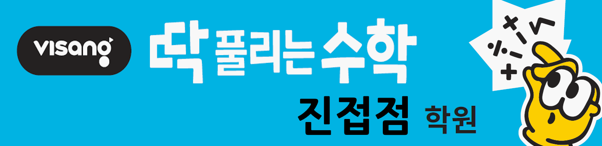
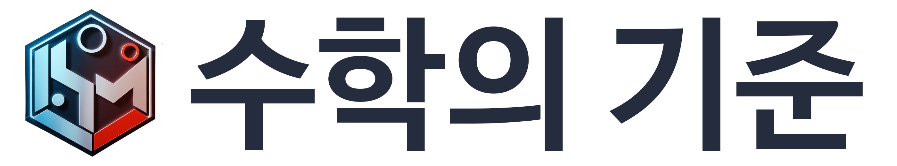

남양주 진접읍 · 화성프라자 5층
진접에서
함께 자라는 수학
우리 아이 학년을 골라 주세요.

초등 · 초3~초6아이의 생각이 풀이로 보이는 수학.
진단 · 개별 진도 · 홉 스텝 점프 수준별 교재 · 매일 귀가보고서
초등 딱풀리는수학 보기
중·고등 · 중1~고2강의는 집에서, 공부는 학원에서.
관리형 플립러닝 · 메타인지 오답노트 · 학교별 내신 · 자체 교재 시성비
중·고등 수학의 기준 보기031-522-5431 남양주시 진접읍 해밀예당1로 40 화성프라자 5층 월~토 13:00 ~ 22:00 · 일요일 휴무
2022 개정 교육과정 · 고교학점제
고등학교 과목 선택, 희망 전공부터 살펴보세요.
2022 개정 교육과정에서는 고등학교에서 배우는 과목과 희망 진로의 관계를 이해하는 것이 중요합니다.
수학의 기준에서 준비한 과목·전공 교차 탐색관을 통해 고등학교 선택 과목, 대학 전공, 대학별 권장과목을 함께 살펴보세요.
- 과목별 학습 내용 확인
- 희망 계열·학과 탐색
- 대학별 권장과목 비교
- 관심 과목과 전공의 연관성 확인
탐색 결과는 진로와 과목 선택을 위한 참고 자료이며, 실제 과목 개설 여부와 대학별 반영 기준은 해당 학교와 대학의 최신 공식 자료를 확인해야 합니다.